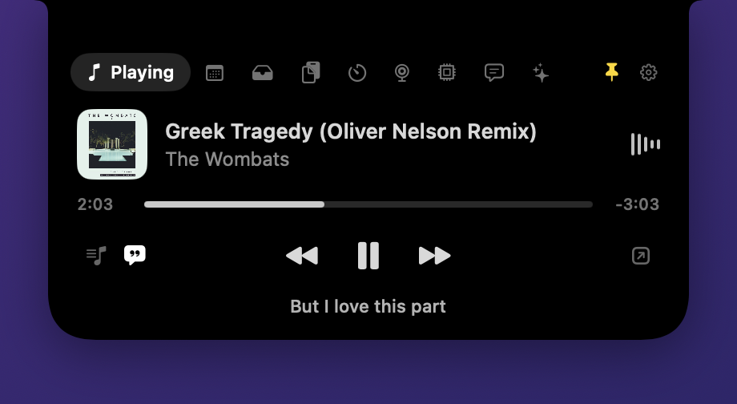
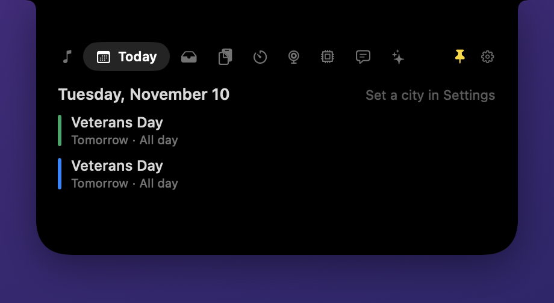
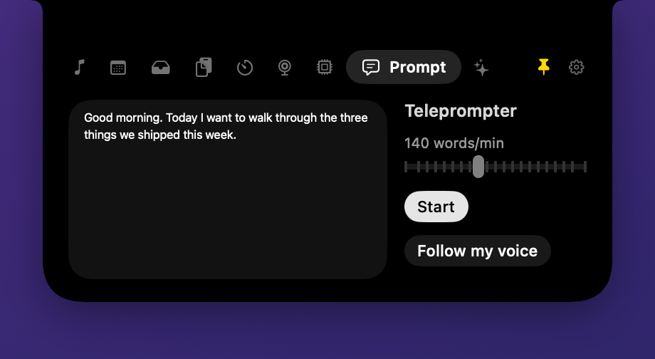

Rest the pointer on the notch
Topside
A macOS app that lives in the MacBook's notch. Rest the pointer on it and a compact panel drops down with music, your day, a file tray, clipboard history, timers, a mirror, system stats, a teleprompter and your coding agents.
This is a web demo. Topside is a native Swift app for macOS 14 and later, so here it runs on sample data: it does not read your music, calendar, files or computer. The camera is only used in Mirror, after you click, and stays on your device.
Things to try
With the panel open, ← → switch sections and Esc closes it. The pin keeps it open.
The nine sections
- Playing
- Now playing from any app, with scrubber, controls, album art and optional lyrics. Playlists, their tracks and a queue are one click away.
- Today
- Upcoming calendar events and the weather.
- Tray
- Park files by dragging them onto the notch. AirDrop, zip and unzip, Quick Look and share.
- Clips
- Searchable clipboard history, kept in memory only.
- Timer
- Countdown timers and a Pomodoro cycle, with an alert under the notch when one ends.
- Mirror
- A camera preview for checking yourself before a call.
- System
- Battery, CPU, memory and free storage.
- Prompt
- A teleprompter right under the camera, scrolling on a clock or following your voice.
- Agents
- Read-only status of recent Claude Code and Codex sessions.
The real app
Captured from Topside running on a MacBook Air.


